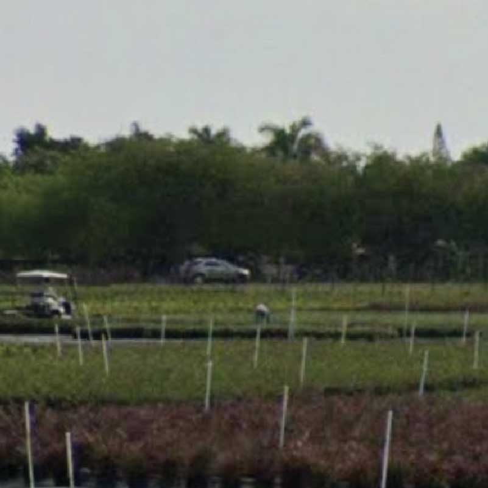
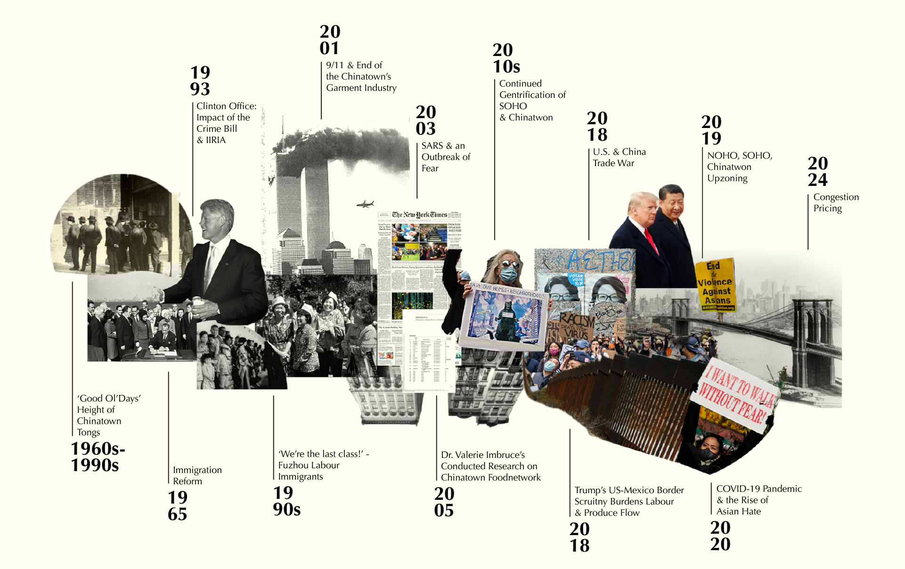

In my family, showing love didn't always involve saying the words out loud. Instead, my parents would cut me plates of fruit.
Apples shaped like bunnies, and strawberries shaped like hearts.
*
Every Chinese New Year, we filled the house with mandarin oranges as we waited for red packets,
A symbol of good luck and prosperity for the year ahead.
*
And when we celebrated Mid-Autumn Festival in my grandmother's backyard,
We wore obnoxious hats made of pomelo rinds in hopes that the Moon Lady would see us better then.
*
Even in times of mourning, we honor our loved ones with fruit offerings at funerals and tomb sweepings.
Expensive pears, the size of my head, heavy in my hands.
*
In my culture, fruit is more than just food.
It is a symbol of love, prosperity, and reverence.
0_INTRODUCTION
"We bought the land where there were already longan trees" -- A Malaysian farmer specializing in East Asian Produce
Nestled in the heart of Lower Manhattan, Manhattan Chinatown is a hub of cultural and economic activity. One of its most iconic features is its bustling produce market, mostly along Grand, Mott, and Canal street. Impressively, the small-scale, low-tech vendors are able to sell diverse, fresh produce at a cost significantly lower than any other grocers. What lies behind them, is a network of produce suppliers that is vital to the local food ecosystem.
For decades, small-scale produce wholesalers in Chinatown have been connecting farmers and distributors with consumers, creating a food landscape that has become a cornerstone of the community. From fresh produce to specialty herbal medicine, the network plays a critical role in ensuring that local residents have access to healthy, affordable, and culturally sensitive food options. The benefits extend beyond just the local community; by supporting small-scale farmers and distributors, the network has helped build a more resilient and sustainable food system for many.
However, this network of vendors and suppliers is facing significant challenges in today's rapidly changing landscape. Gentrification, upzoning, immigration policies, and other outside forces are threatening to diminish the vitality of this historic marketplace. Yet, despite these challenges, it is important to remember the agency of the ethnic enclave admist these changes, as they seek to develop and adapt to different industries. The produce market remains a symbol of resilience and strength, a testament to the tenacity of the people who call Manhattan Chinatown home.
In this love letter to Manhattan Chinatown's produce markets, I explore the historical significance, present challenges, and future possibilities of this unique cultural and economic institution.
BOXES
TABLES
SUPERMARKETS
CARTS
STOREFRONTS
WHOLESALER
1_SPATIAL DISTRIBUTION: NODES & EDGES
"We bought the land where there were already longan trees" -- A Malaysian farmer specializing in East Asian Produce
Chinatown’s produce network consists of four main nodes: consumers, vendors, wholesalers, and farmers. The physical system of edges and nodes are founded upon a strong social network of care, forged from shared ethnic ties, family and community connections, shared immigrant experiences, and a culture of collectivist values.
While the interpersonal proximity between suppliers and consumers is critical to the network's success, geographic proximity also plays a crucial role. According to Dr. Valarie Imbruce's seminal work "From Farm to Canal Street," three key spatial features support the Chinatown produce network. It relies on a small group of competitive, distributed small-scale wholesalers who are clustered throughout Chinatown. This is in contrast to the predominant distribution model in New York City, which is centered around the Hunts Point Food Distribution Center. The spatial proximity allows the wholesalers to make small but frequent deliveries, allowing the vendors to forgo refrigeration and keep overhead low. But it isn’t just a local system, the network is also globally connected, enabling it to provide culturally appropriate foods farmers' markets cannot.
Dr. Imbruce’s research is the singular source that contains holistic documentation of Chinatown's food network. While it was published in 2016, the data was collected in 2005, which is nearly two decades ago. And much has changed between 2005 and now. To figure out what has changed and why, we need to travel back in time.
Manhattan Chinatown's Produce Network in 2005
Hover over a point!
2_GOOGLE STREET VIEW: A METHOD OF FINDING DATA WHERE THERE WERE NONE
"We bought the land where there were already longan trees" -- A Malaysian farmer specializing in East Asian Produce
Most, if not all, of the city’s food policy documents calls for the renovation and further funding of Hunts Point Terminal without giving thought to alternatives that could host wholesale produce distribution in ways that integrate community jobs and food needs.
Our current culture around data means systems that evade quickness and bigness in data, such as Chinatown’s analog operations, become trapped in a feedback loop of being understudied, underrepresented, and undersupported.
But simultaneously, our culture around data also means the existence of omnipresent and omnidirectional surveillance conducted by entities with the capital to do so. Data that were not intentionally being captured are captured in the peripherals, allowing us to find data where data did not exist.
Taking advantage of this, I mined historical Google Street View Imagery to conduct virtual fieldwork through time, finding spectral remnants of where fresh fruit and vegetable used to be and pinpointing their closures in time. This allowed me to transform images into tabular time series, allowing me to see the rate of change over time.
3_GUANXI: SOCIAL CAPITA IN A NETWORK OF CARE
"We bought the land where there were already longan trees" -- A Malaysian farmer specializing in East Asian Produce
Insights never arrive from just data, I needed contextual information about the data’s locality to understand what is going on. So, I spoke to community leaders like Wellington Chen – the Executive Director of the Chinatown Partnership and Chinatown BID, also Vic Lee and Jackie Wang – founders of Welcome to Chinatown. But perhaps the most fruitful conversations I’ve had were with the people who lie at the heart of this network: the vendors, wholesalers, and farmers.
What emerged from these conversations was the importance of the culture of GuanXi. GuanXi is a Chinese term that refers to a system of social networks and influential relationships. In Chinatown, GuanXi is crucial for building trust, and is often tied to a shared sense of identity. Every vendor and wholesalers I have spoken to are immigrants or refugees who came to the United States with few resources, no Englsih, and little knowledge of how to navigate the complex systems of American commerce. They were able to rely upon informal networks of friends, family members, and fellow immigrants to help them find suppliers, negotiate with landlords, and navigate the various linguistic, legal and bureaucratic hurdles. GuanXi also enforces a shared sense of responsibility, as built within it is a strong emphasis on reciprocity and the idea of "owing" a debt of gratitude to someone who has helped you in the past. This can be a powerful motivator for people to help each other out, even when there is no immediate or obvious benefit to doing so.
By making use of collective knowledge, shared resources, and social capita, residents of Chinatown were able to build thriving communities, businesses, and a network of care for people who might otherwise be isolated and vulnerable, even when disenfranchised and discriminated against.
I also benefit from GuangXi. I live on Mott and Grand. The ground-level storefront of my apartment is a produce vendor. This network is one I actively participate in. I am one of the people it serves and the people that serve it are not just subjects of this research but neighbors I say hi to every morning. They are aunties that pass me recipes for her pork stew, and uncles that pass me a free banana or two as I rush to school.
So I benefit, not only from an inherent kinship that exists just from the way that I look and the language that I speak, but also from pre-existing personal connections. The GuangXi privileged me to certain personal histories that they shared over beer and egg-tarts. Together they paint a story of hardship, care, and resilience through an oral history of the network, providing a lot of insight into what Chinatown has been facing over the past two decades that could be contributing to the change we saw in the data.
CONSUMER
The consumers of Chinatown produce market are typically local residents and are majority Asian, but that has been changing over the years as immigrants increasingly relocate and different demographics move into the neighborhood.
VENDOR
Produce vendors are individuals or businesses that sell fresh fruits and vegetables to consumers. They range from carts to grocery stores.
WHOLESALER
Produce wholesalers are businesses that purchase fresh fruits and vegetables in bulk from farms and distribute them to businesses such as restaurants or vendors. They require large refrigerated warehouse spaces which are limited by zoning regulations.

FARMER
Farmers engage in the cultivation and production of crops and sell them to wholesalers. Many of the farmers Chinatown work with specialize in Asian produce. They range from being located in California to being located in Hondorus.
4_FROM ROOTS TO REIMAGINING: THE EVOLUTION OF MANHATTAN CHINATOWN'S PRODUCE NETWORK
"We bought the land where there were already longan trees" -- A Malaysian farmer specializing in East Asian Produce
Many of the vendors and wholesalers I spoke to immigrated to New York in the 80s, the majority of them refugees; many Shan, Vietnamese, Cambodian, and Laotian. When they arrived, they spoke no English and this was the only work they happened to find – through a cousin, through a friend, or through a brother in a Tong.
They talked about their children with pride as they showed me photos of them celebrating birthdays and talked about how great they are in school. None of the vendors or wholesalers have children in the business, some explicitly saying that they don’t want this life for them.
They noted that immigration patterns have changed, causing labor shortages. The Fujianese man claimed “We’re the last class!” and he came in the 90s.
They talked about the disappearance of the Garment Factories post 911, whose workers werethe majority of their clientspost 911; they talked about the fear and phobia they faced during SARS, and the way SOHO Gentrification priced out their wholesalers.
They talked about COVID-19 and the lack of foot traffic on the street even today, three years after the initial outbrealk. One of them claimed that he used to sell ten boxes of fruits in just an hour, and now he’d be happy with two boxes a day. They talked about rent increases and the fear of congestion pricing, noting that that would be the nail in the coffin for the network.
It is easy to imagine a world where the produce network does not exist at all, and yet it stands.

Tongs: The Hidden Hands of Chinatown's Produce
The wholesalers and vendors I interviewed bantered over their early involvement in the Tongs. Tongs initially formed out of 1800s Chinese immigrants’ need for support, protection, and advocacy from discrimination. These tongs aided with housing, employment, and community disputes, but many turned to prostitution, human trafficking, gambling, and opium for profit.
While this did lead to much internal turmoil, turf wars, an unjust violence that continued throughout the 1980s, they revealed that the underground money flowed above ground too, aiding the more formal businesses like selling produce. Many actually got into the produce business through their involvement with the Tong.
A Step Forward: The 1965 Immigration Law
The 1965 Immigration and Nationality Act abolished the quota system that heavily favored European immigrants, opening the door for more Asian immigrants to enter the United States. Prior to this law, the Chinese Exclusion Act of 1882 had prohibited Chinese immigrants from entering the country, and subsequent laws had further restricted Asian immigration.
The 1965 law marked a significant change in policy, leading to a surge in Asian immigration in the following decades. Chinatown grew beyond Mott, Mosco, Pell, and Doyers Streets, and became more family oriented. However, even after the passage of the 1965 law, Asian immigrants continued to face discrimination and prejudice, and many struggled to gain equal footing in American society.
Fear and Mistrust: The 1994 Crime Bill and IIRIRA
Many vendors I interviewed mentioned that the Clinton administration was a particularly difficult time, citing the impacts of the 1994 Crime Bill and the Illegal Immigration Reform and Immigrant Responsibility Act (IIRIRA) of 1996. They attributed the end of the Tongs and the rise of deportation to these policy changes. To them, it was a turbulent time of fear and mistrust.
IIRIRA made it more difficult for immigrants to obtain legal permanent residency and introduced harsher penalties for immigration violations, while the 1994 Crime Bill increased funding for police, expanded the death penalty, introduced mandatory minimum sentences for drug offenses, and banned assault weapons.
Fujianese Immigrants: “We’re the last class!”
During the 1980s, growing numbers of Fuzhou immigrants started arriving in Manhattan's Chinatown. Because Manhattan's Chinatown was mostly Cantonese-speaking, many could not integrate well there.
During my interviews, many noted that the Fujianese immigrants were the last wave of labour immigrants that settled in Manhattan Chinatown and contributed to the produce network.
9/11 & the End of Chinatown's Garment Industry
Since 9/11, the eastern half of Park Row around NYPD headquarters – from the Manhattan end of the Brooklyn Bridge to Chatham Square – has been a no-traffic security zone. Combined with the Brooklyn Bridge, this creates a mental and physical barrier between Chinatown and Lower Manhattan, a major source of consumers.
To make matters worse, following 9/11, the garment manufacturing industry in Chinatwon relocated, and over 115 garment factories closed permanently. The garment factory workers were the majority of the produce network’s consumers, making it detrimental to the system.
SARS & Chinatown: An Epidemic of Fear
The 2003 SARS epidemic stigmatized Chinatown, despite Chinatown having no reported SARS cases. The vendors claimed that the fear it brewed resulted in a major loss of customers.
The Last Snapshot in Time: Imbruce Captures the Network in 2005
In 2005 and 2006, Valerie Imbruce conducted her research on Chinatown’s produce network, collecting quantitative and qualitative data on the system. She eventually published them in her book, “From Farm to Canal Street” in 2016.
Less than 50% of the network documented in the book still stands today.
Closing Shop: The Rise of Luxury Condos and the Exodus of Wholesalers from Chinatown
The gentrification of SoHo, which began in the 1970s, eventually spilled over into Chinatown by the 2000s. By 2007, luxury condominiums began to spread from SoHo into Chinatown. As luxury condominiums and upscale retail shops began to occupy the area, property values and rents rose, making it increasingly difficult for many long-time residents, including those in Chinatown, to afford to live there. This lead to the closure of many wholesalers located along Kenmare and Broome, a number of which relocated to east Williamsburg.
Informal Trade Channels Meet Formal Restriction: Caught in the Crosshairs of Trump's Border Policies
The Trump era policies on immigration and border control had a significant impact on the US-Mexico border, which in turn affected industries and communities that rely on labor and goods from Mexico. This includes Chinatown's produce market, which often depends on informal channels of trade and labor from Mexico. The Trump administration's attempts to build a border wall and crack down on illegal immigration from Mexico led to increased scrutiny and restriction of cross-border trade and labor. This had a direct impact on the availability and cost of produce and other goods that Chinatown's markets rely on, as well as the availability of labor to work in the market itself.
A Casualty of Trump's Trade War
The impacts of US-China trade war in the Trump era, which began in 2018 when the U.S. announced tariffs on Chinese good, was felt by many businesses in Chinatown. While the produce were rarely sourced from China, many of the other expenses of the business, such as packaging and equipment, do come from China. As a result, the vendors noted the rise in costs incurred by the tensions between the two countries.
From Streetfront to Skylines: SoHo, NoHo, and Chinatown's Upzoning
In 2018, the New York City Council approved a rezoning plan that allowed for taller and larger buildings in SoHo, NoHo and parts of Chinatown. Though the plan aimed to encourage more residential development and increase affordable housing in the area, the upzoning has also raised concerns about the potential displacement of small businesses and longtime residents. Many blame the influx of galleries that are replacing streetlevel strofronts in Chinatown to the real-estate speculation cause by the upzoning. It is projected that the upzoning will lead to the influx of luxury developments and chain stores, driving up rents and pricing out the communities that have historically thrived in the area.
The Slow Road to Recovery: Chinatown's Struggles Against Lingering Impacts of COVID-19
While the pandemic impacted everyone, Chinatown was particularly hard hit. Chinatown lost 26% of its jobs from 2019 to 2021, compared to 14% citywide. This is potentially due compounded by the rise anti-Asian hate and phobia. Some businesses are concerned that stigma will prevent some customers from ever returning.
As of late 2023, using MTA turnstile as proxy, it can be seen that visitation was still down 50% in Chinatown. This is likely impacted by the fact that weekday office workers now follow hybrid formats. The impacts of these changes are particularly felt by industries with analog operations like the produce market that rely on foot traffic. To make matters worse, government programs that use income by ZIP code to determine eligibility have disqualified the majority of Chinatown businesses, as Tribeca and SoHo households share the ZIP code 10013.
Looking Ahead: What The Toll of Congestion Pricing would be on Chinatown's Fresh Produce
Many produce vendors and wholesalers are concerned about the potential implementation of Congestion Pricing over downtown Manhattan; some even claimed that that would be the nail in thew coffin. The plan calls for drivers to be charged a toll to enter a designated "congestion zone" in Manhattan, south of 60th Street. The exact toll amount has yet to be determined, but it is expected to be around $12 for cars and $25 for trucks during peak hours.
As the wholesalers have been priced out of Manhattan and relocated to East Williamsburg, the implementation of congestion pricing on the Brooklyn Bridge, which is currently toll-free, would increase transportation costs for these wholesalers.
Additionally if coming to Chinatown increases cost, it would incentivize wholesalers to make less frequent but larger deliveries, which could impact the freshness and quality of the produce they bring to market. What made Chinatown’s produce market so fresh is that its spatial proximity allowed wholesalers to make smaller and frequent deliveries. This could result in further challenges for businesses in Chinatown, as consumers may seek out fresher produce elsewhere.
5_UNPACKING IN BINARIES
"We bought the land where there were already longan trees" -- A Malaysian farmer specializing in East Asian Produce
This is sample text. Fruits hold great significance in Chinese culture, not only for their nutritional value but also for their symbolism and cultural traditions. Certain fruits are considered auspicious and are often served during special occasions, such as weddings and Lunar New Year celebrations. For example, oranges are a symbol of good luck and prosperity, while pomelos represent abundance and success.
Fruits are also an important part of traditional Chinese medicine, where they are used for their healing properties. For instance, goji berries are believed to boost the immune system and improve vision, while lychees are used to treat coughs and fevers.
Moreover, fruits play a significant role in Chinese art and literature. They are often depicted in paintings and poems, with each fruit representing different qualities and emotions. For instance, the peach symbolizes longevity and immortality, while the pomegranate represents fertility and abundance.
In summary, fruits are deeply embedded in Chinese culture, not only for their health benefits but also for their symbolic meaning and cultural significance.